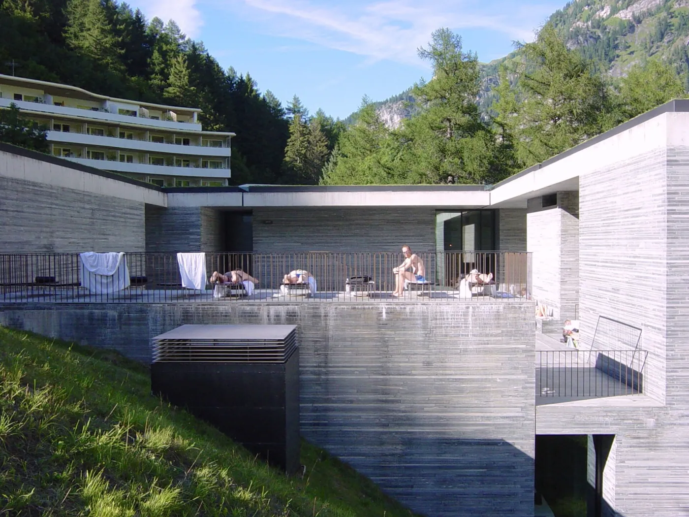
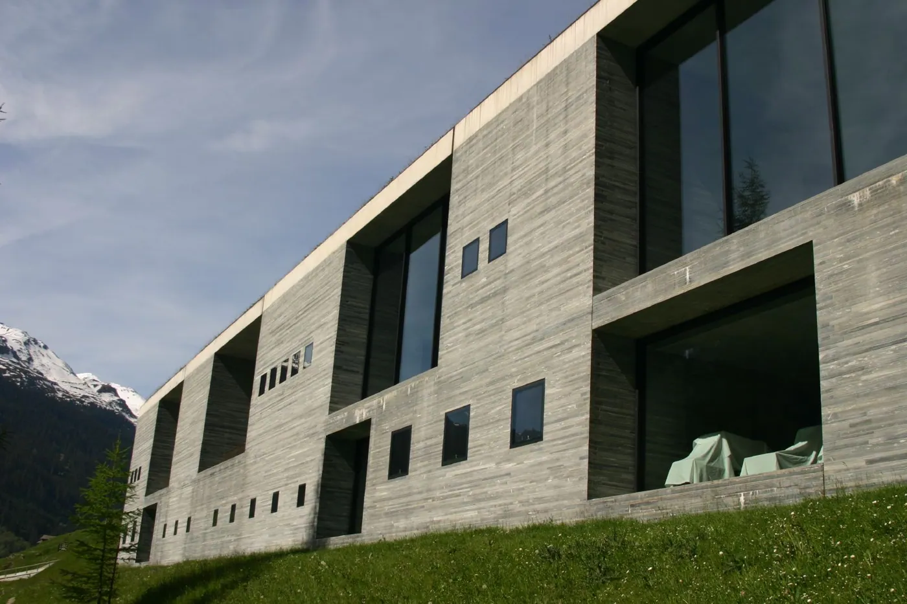
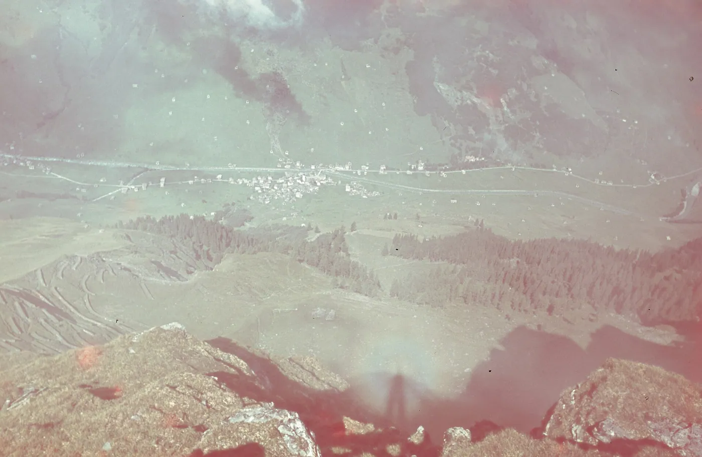
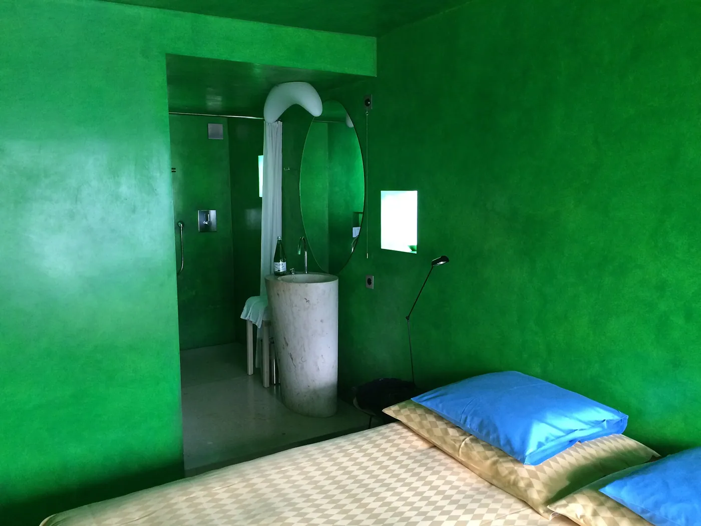
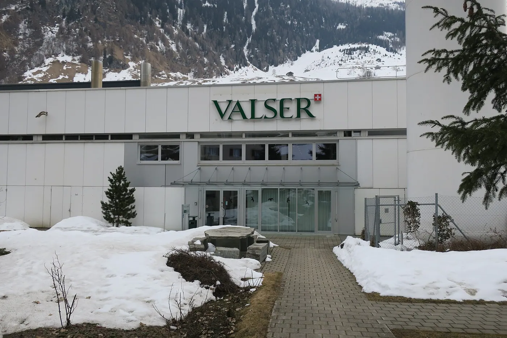
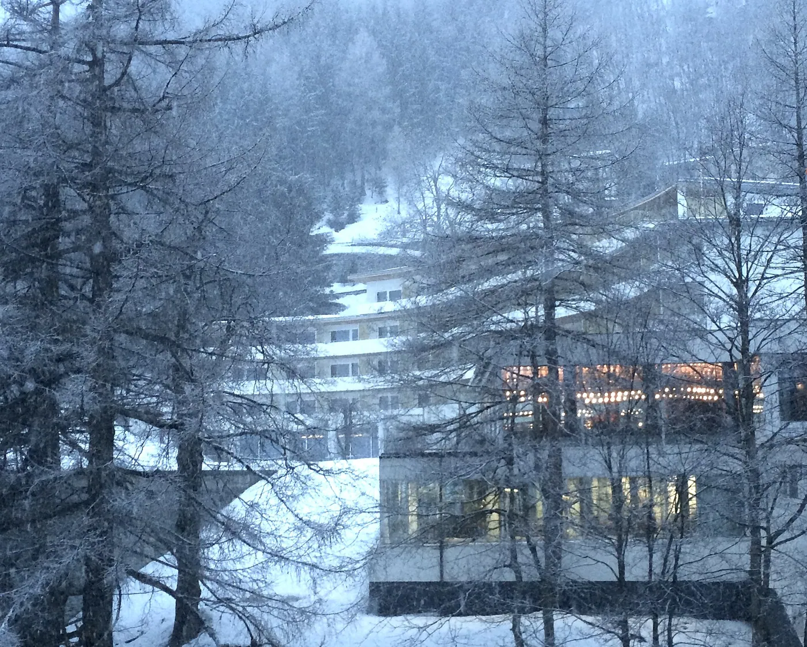
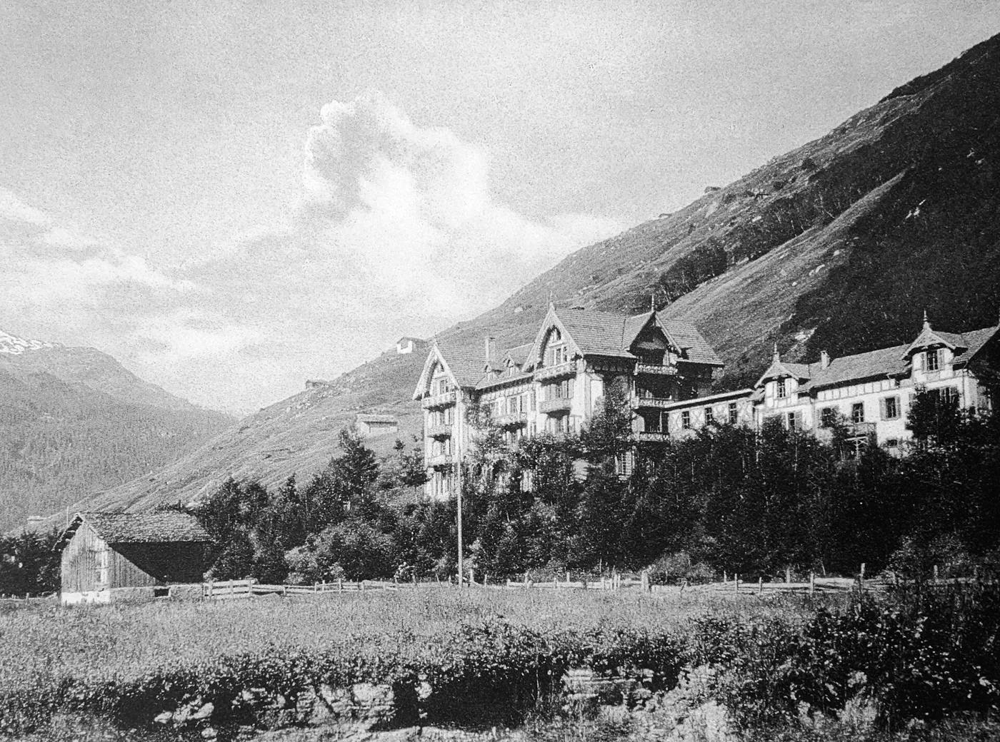

1/8 · Exterior · Kylpylä Sveitsin ValsissaPhoto: fcamusd · CC BY 2.0 · source
2/8 · ExteriorPhoto: Gunnar Klack · CC BY-SA 4.0 · source
3/8 · Exterior · Therme_Vals, Vals, Graubünden, SwitzerlandPhoto: p2cl · CC BY-SA 2.0 · source
4/8 · Exterior · Kylpylä Sveitsin ValsissaPhoto: fcamusd · CC BY 2.0 · source
5/8 · Interior · Stucco-Zimmer in Hotel de:Therme ValsPhoto: Adrian Michael · CC BY-SA 3.0 · source
6/8 · Detail · Vals, Therme (Canton Graubünden, Switzerland), quartzite ValsPhoto: Lysippos · CC BY-SA 3.0 · source
7/8 · Context · Hotel de:Therme ValsPhoto: Adrian Michael · CC BY-SA 3.0 · source
8/8 · Context · de:Therme Vals um 1910Photo: C. Maggi · Public domain · source 058/100 · Hospitality · Contemporary
Therme Vals
Peter Zumthor · Vals, Switzerland · 1996
Study it forStacked layers of local quartzite, with slots of light between the roof slabs.
- Architect
- Peter Zumthor
- Place
- Vals, Switzerland
- Year
- 1996
- Typology
- Hospitality
- Movement
- Contemporary
- Region
- Europe
See it on the wall